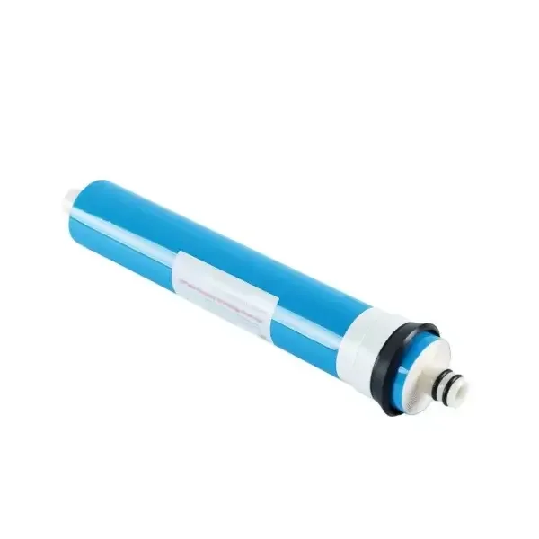
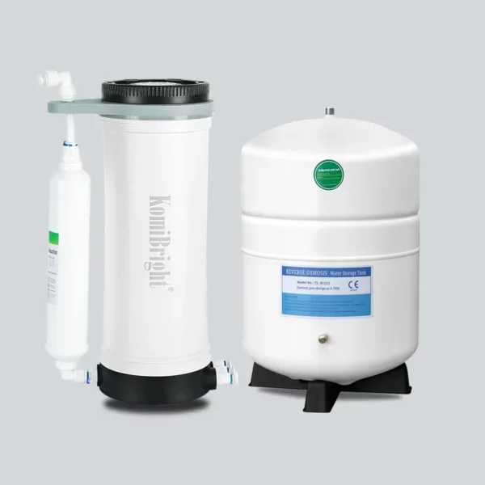

KB-C25R
KB-C25R 100G 免电反渗透净水器
旗舰免泵RO净水器——只靠自来水压力，实现0.0001μm级净化，一年只换一次滤芯。
- 全机采用PP5食品级材料
- RO膜自动冲洗，全程无需用电
- 超级复合滤芯，使用寿命更长
- 单壳体多膜功能一体化设计
- 创新阀件，水路自动稳压
- 内置集成式限流器
- 耗材一年一换，轻松上手
- 无多余接头与零部件
标准配置: RO膜、复合滤芯、3.2G压力桶、备件包
产品规格
| RO膜 | CN-1812-100G |
|---|---|
| 复合滤芯 | F-210（PP棉+碳纤维） |
| 过滤精度 | 0.0001 μm |
| 进水水源 | 市政自来水 |
| 进水压力 | 21–70 PSI（1.5–5 bar） |
| 进水温度 | 5–35℃ |
| 滤芯更换 | 每12个月一次 |
| 产品尺寸 | D14×D20×H38cm / D24×H35cm |
KB-C25R 是 KomiBright「大道至简」理念最纯粹的体现：一台完整的反渗透净水器，没有泵、没有电源线、没有多余的接头。只要自来水有1.5公斤的水压，它就能安静地产出0.0001μm级的纯水。
传统RO机需要三到五支独立滤芯，C25R 只用一支超级复合滤芯（PP棉+碳纤维）和一支100G RO膜，集成在模块化水路的单一壳体内。RO膜无需用电即可自动冲洗，寿命更长；耗材一年只换一次，几分钟搞定，谁都会换。
相关产品

